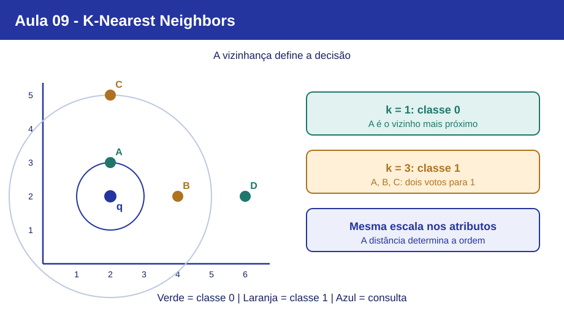

Nota visual 09 - K-Nearest Neighbors (KNN)

Questão central: quais exemplos são semelhantes e como a representação muda essa decisão?
Mapa conceitual
flowchart TD
A["Treino e nova entrada"] --> B["Imputar, codificar e escalar"]
B --> C["Calcular distâncias"]
C --> D["Ordenar exemplos"]
D --> E["Selecionar k vizinhos"]
E --> F["Votação de classes"]
F --> G["Predição"]
classDef base fill:#e9eafb,stroke:#2435a0,color:#17215e;
class A,B,C,D,E,F,G base;
Conceitos em sequência
- Preparação dos dados: Titanic train.csv; atributos Pclass, Sex, Age, SibSp, Parch, Fare e Embarked; alvo Survived.
- Ausências e outliers: Imputação de mediana/moda segundo a coluna; outlier não é automaticamente erro.
- Codificação: OneHotEncoder para categorias nominais; ColumnTransformer e Pipeline evitam inconsistências.
- Evitar vazamento: Treino/teste antes de aprender mediana, escala e parâmetros da transformação.
- KNN: Distância aos exemplos de treino, ordenação, k vizinhos e voto majoritário.
- Escala e seleção de k: StandardScaler e validação cruzada k-fold; escolher k sem consultar conjunto de teste.
Distância e escolha de k
d(x,z) = sqrt(Σ (xⱼ - zⱼ)²)
x e z são vetores de atributos e j percorre suas dimensões. Com consulta q=(2,2), os exemplos abaixo produzem:
| Exemplo | Coordenadas | Classe | Distância a q |
|---|---|---|---|
| A | (2,3) | 0 | 1 |
| B | (4,2) | 1 | 2 |
| C | (2,5) | 1 | 3 |
| D | (6,2) | 0 | 4 |
k=1 prevê 0; k=3 prevê 1 por maioria. A escolha de k altera a suavidade da fronteira: valores pequenos são sensíveis a ruído, valores grandes podem apagar estruturas locais. Em regressão, agrega-se o valor dos vizinhos, não seus rótulos.
Por que preparar os atributos?
Se idade variar 10 unidades e tarifa variar 100, a segunda diferença domina a distância euclidiana bruta, mesmo que isso seja apenas efeito de escala. Para uma variável numérica, padronize usando z=(x-μ)/σ, com μ e σ estimados no treino. Categorias nominais exigem codificação apropriada, não uma ordem numérica arbitrária.
| Atributo no Titanic | Preparação |
|---|---|
| Age, Fare | Imputação e padronização conforme estratégia |
| Pclass, SibSp, Parch | Considerar significado ordinal/numérico |
| Sex, Embarked | Codificação de categorias e tratamento de ausências |
| Survived | Alvo, não atributo de entrada |
Validação cruzada
Para testar k=1,3,5 (ou outros valores), compare as médias das métricas sobre os mesmos folds do treino. Em cada fold, a imputação, codificação e escala são ajustadas somente à parte de treinamento. Pipeline e ColumnTransformer mantêm esse isolamento. Escolha k pelo desempenho de validação, não pelo teste; o teste reservado só avalia a configuração final.
Revisão de 30 segundos
KNN armazena exemplos e decide por proximidade. Escala, codificação, métrica de distância e k determinam quais vizinhos influenciam a predição.
Erros conceituais frequentes
- Usar o teste para escolher parâmetros ou transformações.
- Tratar acurácia como critério universal de qualidade.
- Escolher k observando o teste ou padronizar antes de separar os dados.
- Supor que distância pequena garante classe correta.
Revisão de 1 minuto
Ordene os quatro vizinhos do exemplo, compare k=1 e k=3 e explique como multiplicar uma dimensão por 100 pode alterar a ordem.
Checklist
- [ ] Calculo distância e voto de vizinhos.
- [ ] Distingo treinamento, validação e teste.
- [ ] Identifico transformações numéricas e categóricas.
- [ ] Escolho k por validação cruzada sem vazamento.
Próxima conexão: SVM aprende uma fronteira de decisão, em vez de consultar vizinhos a cada predição.